Reportman - Add content - Detail
If you have created your own reports, from the following templates:
- Empty.rep - This report includes a standardised Page header (COMPANYDATA dataset) and a standardised Page footer. The Detail section of the Report Structure is blank.
- New.rep - This report includes a blank Page header, Detail section and Page footer. The entire report is blank. Need to add the COMPANYDATA dataset in the Page header and add the details in the Page footer.
Whichever template your own new report is based on, the report will not print any data from the active Sets of Books.
You need to add the details (content of the report), which must include a "Main Dataset" containing SQL to reference the tables and the fields to be available for the report.
Thereafter, you may select the data fields from the table(s) and drag it onto the report.
REPORT DETAIL
To create a new report from scratch, the debtor listing report will be used to illustrate the basics based on the "Empty.rep". This example will also illustrate to add parameters to the report.
|
|
To create a new report based on and existing report, the debtor listing report, is used as basis to create a creditor listing report. |

Add a New dataset
You need to add the details (content of the report), which must include a "Main Dataset" containing SQL to reference the tables and the fields to be available for the report.
To add a new Main Dataset:
- On the "Report manager designer" screen, launch the "Database and connections datasets" screen (accessed from the first icon or from the Report → Data access configuration menu).
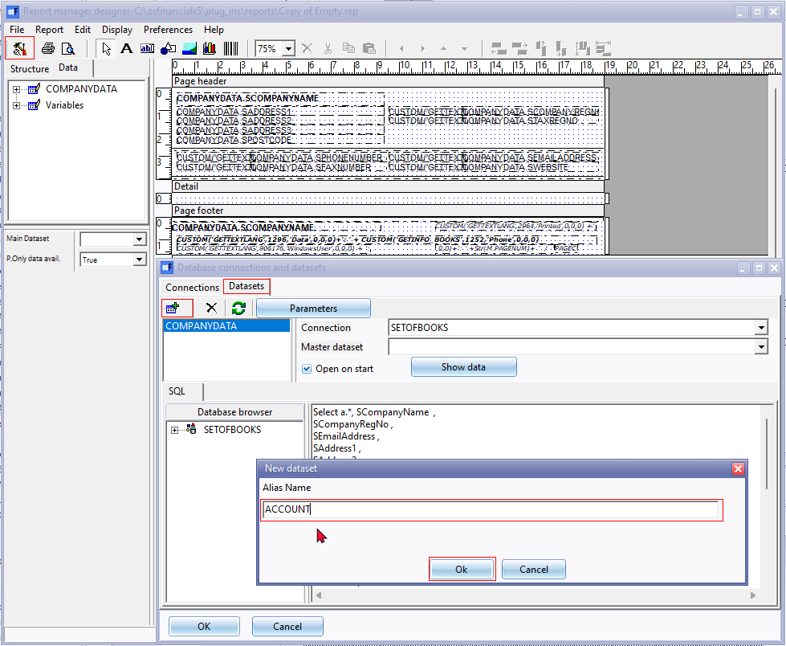
- On the "Database connections and datasets" screen, click on the Add+ icon to add a New dataset.
- Enter i.e. “ACCOUNT” and click Ok.
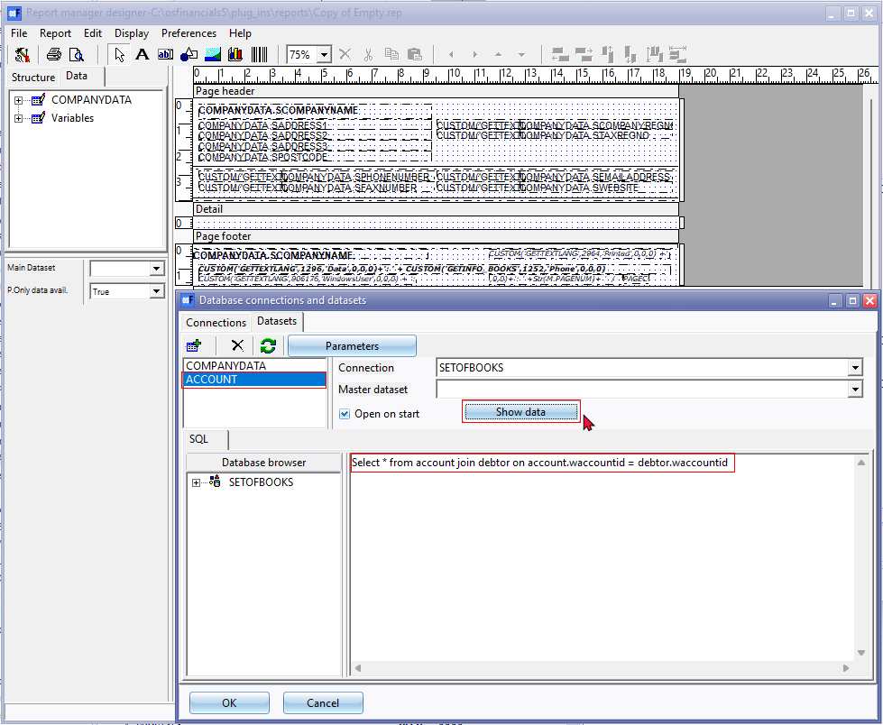
|
|
On Datasets tab, you may use the Database browser to view the tables. (The ACCOUNT and DEBTOR tables). |
- On the new Dataset “ACCOUNT” type the following Sql:
“Select * from account”
This will add all fields (*) in the ACCOUNT table.
Then add the join from the DEBTOR table.
“join debtor on account.waccountid = debtor.waccountid”
The Sql should as follows:
“Select * from account join debtor on account.waccountid = debtor.waccountid”
- Click on the Show data button to preview the data tables (Dataset).
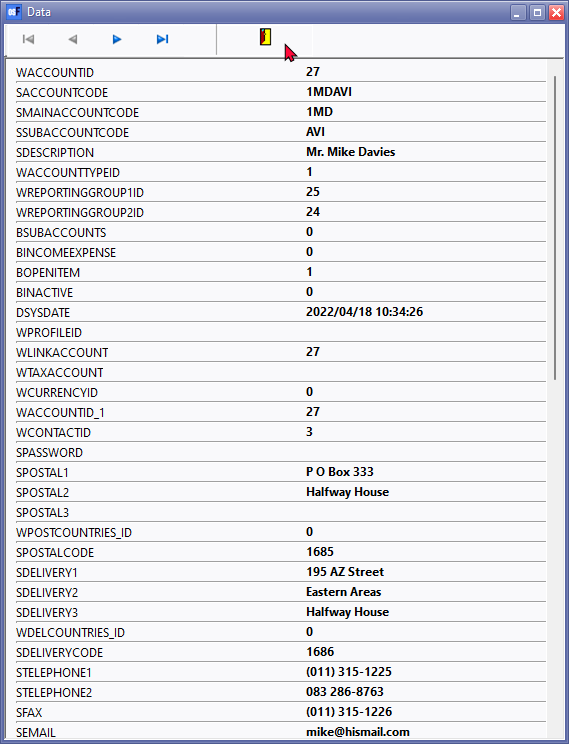
|
|
Each time you click on the Next and Previous buttons the accounts will be listed from the account id (WACCOUNTID) field. |
- Close the "Data" screen.
- Click OK on the "Database connections and datasets" screen.
|
|
The next step is to link the ACCOUNT dataset as the Main Dataset to the report. |

Link the ACCOUNT Dataset to the SubReport-0
Once you have added the dataset, e.g. ACCOUNT as in this example, you need to link the Dataset to the Main Dataset. You may need to set the dataset to print only if data is available. This will prevent printing blank reports, which may only print the Page header and Page footer.
To link the Dataset to the SubReport:
- On the report Structure tab, select the SubReport-0.
- Link the SubReport-0(No Dataset) to the Main Dataset (i.e. "ACCOUNT").
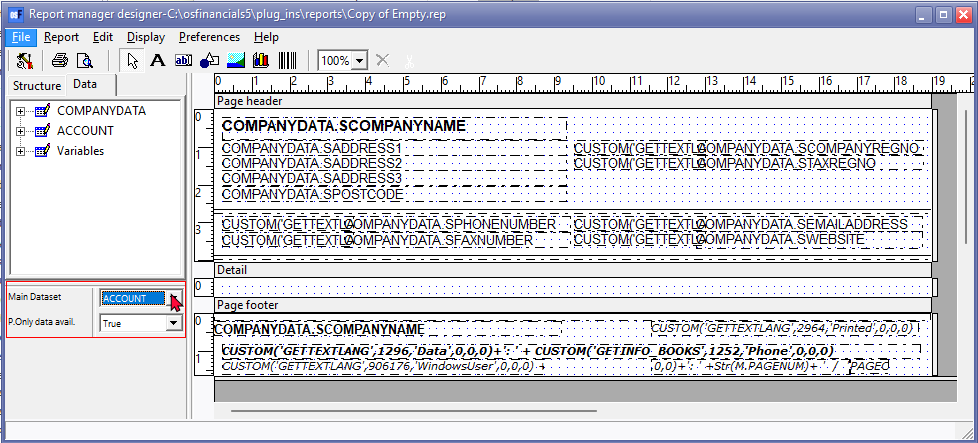
- "P.Only data avail." (Print only data available) set to “True”.
|
|
If an invalid selection is made on the parameters; or if there is no data in the "ACCOUNT" dataset to print, the following error message will be produced: “No data available to print!” If the "P.Only data avail." (Print only data available) set to “False”, the report will print only the Page headers and Page footers if no data is available on the "Main Dataset". |

|
|
The next step is to add the data in the ACCOUNT table to the Detail section of the report. |
Add data to the Detail section of the report
Once the Dataset is set and the tables are defined, you may proceed to select the data from the tables you need to print on the report.
To add data from the Main Dataset to the report detail:
- On the Data tab, expand the ACCOUNT table. Add the data you wish to print.
|
|
You could drag and drop the fields from the ACCOUNT table onto the Detail section of the report. |
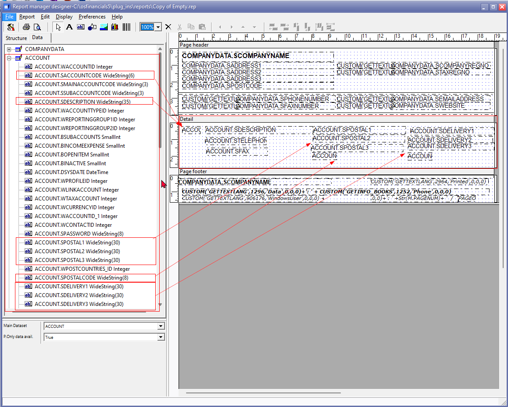
- Add (drag) all the data fields (expressions), as required onto ("Detail" section of the Report structure) the report.
- Click on the Print preview icon.
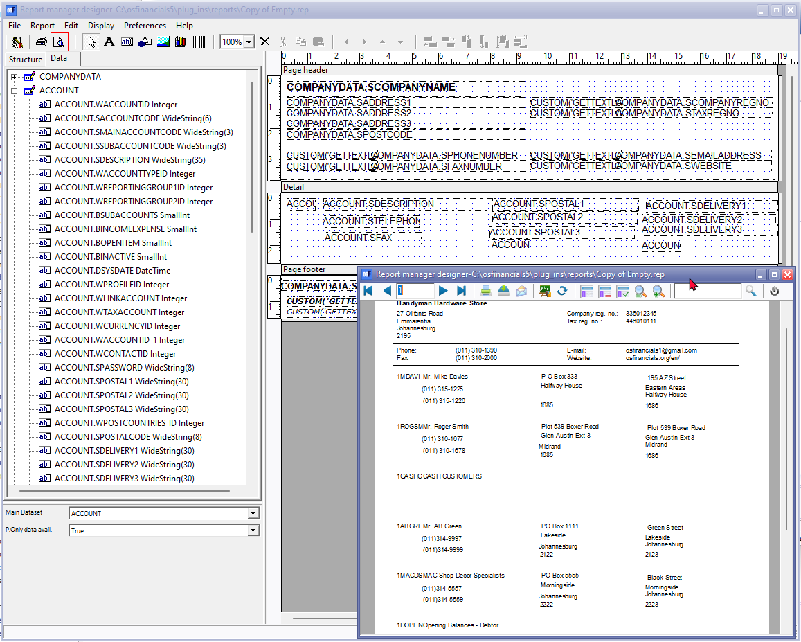
- If data is entered on the relevant fields of the forms (screens), as per this example, the Account code, Account name (description), Telephone 1, Telephone 2, Postal address and Delivery address will be displayed in the Detail section of this report.
|
|
The sequence, in which the debtor (customer / client) accounts is listed, does not really makes sense on the printed report. The reason for this, is that the accounts is by default sorted according to the record number (id) on the ACCOUNT table. |
|
|
The next step is to change the default sort order (sequence) to account code or description in which the data in the ACCOUNT table should be listed in the Detail section of the report. |
Set the sequence (order) of the data in the report
By default, the report, will list the data according to the sequence (order) of the account id (WACCOUNTID) as in this example.
To change this, for example, to debtor code or debtor description, you may set the SQL to change the sequence (order) of the report.
|
|
The sequence, in which the debtor (customer / client) accounts is listed, does not really makes sense on the printed report. At this stage, in the (report design stage), you can set a specific sequence in which the data is displayed, for example account code or description. You may add the sequence parameter which will add an option to the report options screen. The sequence in which the data on the report is listed can be selected when the report is printed or reprinted. |
To set the default Account sequence for the report:
- On the "Report manager designer" screen, launch the "Database and connections datasets" screen (accessed from the first icon or from the Report → Data access configuration menu).
- On the Datasets tab, select the ACCOUNT dataset.
- Click the Show data button.
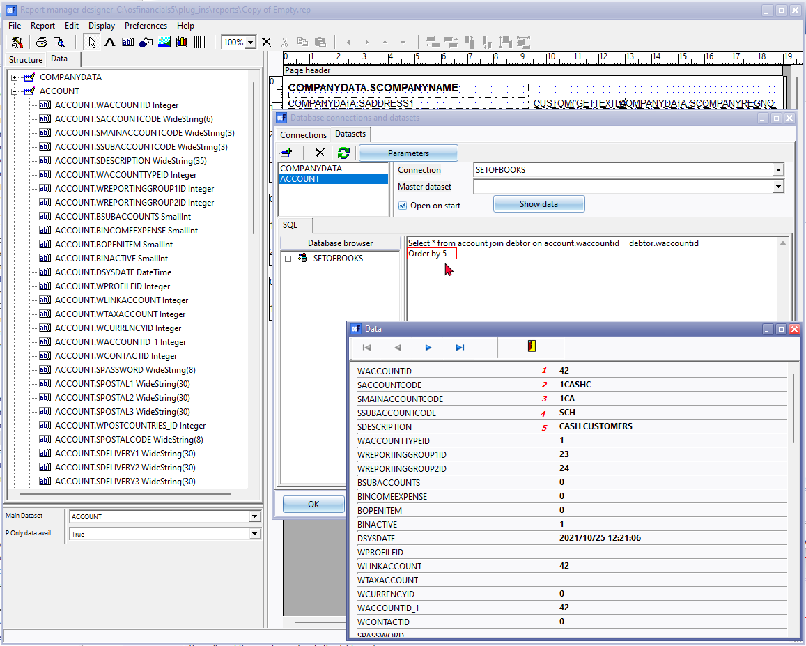
- Note the Data's number (e.g. WACCOUNTID = 1; SACCOUNTCODE = 2; SMAINACCOUNTCODE =3; SSUBACCOUNTCODE = 4; SDESCRIPTION = 5; etc.).
- To list the accounts, according to the account name or description, you need to enter the following SQL"
“Order by 5”
This will print the report according to the debtor (customer / client) account description.
|
|
To print the report according to the debtor code, you may set the Sql to change the sequence (order) of the report. Change the number 5 to 2 in the Sql “Order by 2” This will print the report according to the debtor code. |
- Close the "Data" screen.
- Click on the OK button of the "Database connections and datasets" screen.
- Click on the Print preview icon. An example of the printed report according to the account description (Order by 5), is as follows:
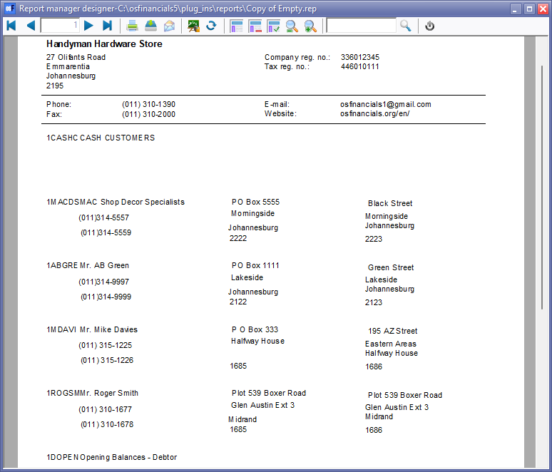
- Close the "Print preview" screen.
|
|
The next step is to add descriptive headings for the data in the Detail section of the report. |
Add headings to the Data on the Details section of the report
From a user's point of view, the data on the report would not make sense.
As per this example, the Account code, Account name (description), Telephone 1, Fax, Postal address and Delivery address will be displayed in the Detail section of this report.
There are 2 methods of adding labels to a report:
 Static text - Add plain text labels.
Static text - Add plain text labels. Expressions - Add translatable expression labels to reference the language id. This will use the language files to translate the labels the languages are changed (Switch language on the Start ribbon).
Expressions - Add translatable expression labels to reference the language id. This will use the language files to translate the labels the languages are changed (Switch language on the Start ribbon).
To add static text (labels):
- Select the "Detail" section of the report structure.
- Select the Text icon to insert static text and drag it to the required space on the report. It will add the “TrpLabel0”, etc. for each static text field.
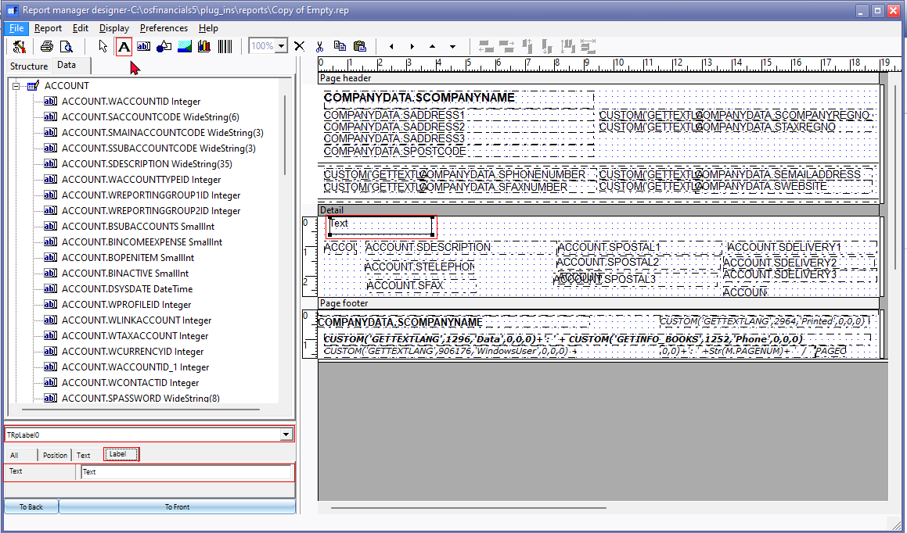
- On the Label tab, replace the "Text" with your own, e.g. "Account code".
- Repeat the process for all labels. Once all the static text labels are added, you may need to change the font.
|
|
To select all the labels you need to format, select a label (e.g. Code); and while keeping the Shift key in; use the mouse to select the rest of the labels for which you wish to change the font properties. |
- Click on the Text tab or All tab.
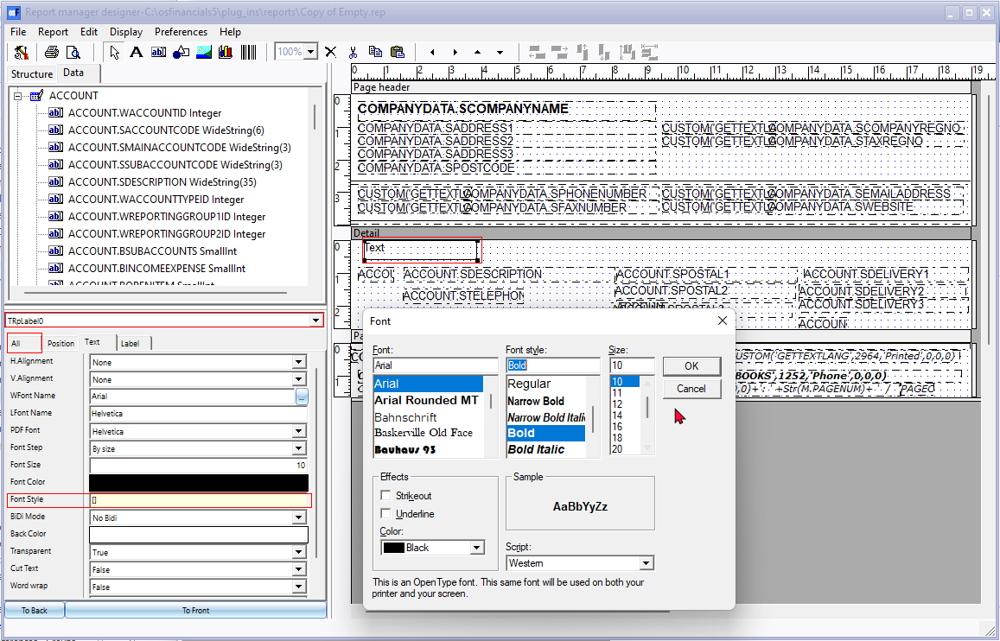
- Select your options to change or set the properties, and click OK on the "Font" screen.
- Click the Preview icon.
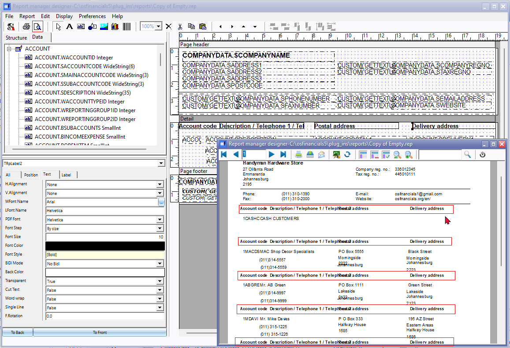
- In the example of this Preview, 2 issues need some attention:
- There is no space between the "Description / Telephone 1 / Telephone 2" label and the "Postal address" label. The Postal address label and expressions may be moved to the right; or line breaks could be added in the Text label.
- The static text headings is repeated for each account. To solve this by printing these Heading labels on each page once only, you may need to add another Page header and set a Print condition.
PAGE HEADERS
To print the headings only once on the page, you may:
- Stretch the Page header and cut the headings from the Detail section of the report and Paste it on the Page header, or;
- You may add (insert) another Page header and cut the headings from the Detail section of the report and Paste it on the Page header.
For longer reports (multi-page reports), where the Company data only needs to print on the first page and the headings on each page, a new Page header is recommended for the headings.
Add (insert) Page header
To insert another Page header:
- Select Page header and on the Structure tab, click on the Add icon and select Page header from the list.
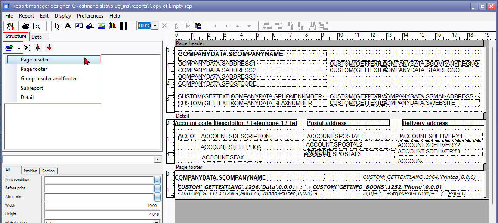
- This will insert a new Page header to the top of the existing Page header (before the Page header containing the information from the COMPANYDATA Data set.
- On the Structure tab, select the new (blank) Page header and click on the Down arrow to move the section down.
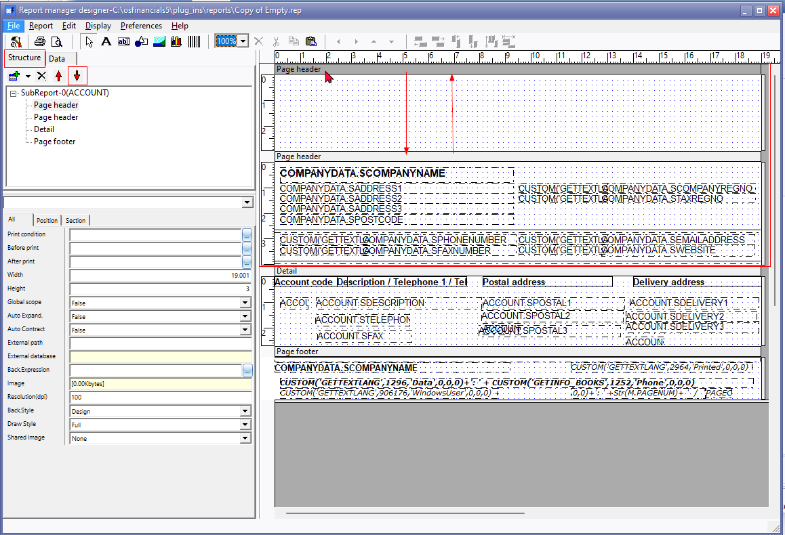
- Once the blank inserted Page header is moved, you may add the Headings from the Detail section to the new page header.
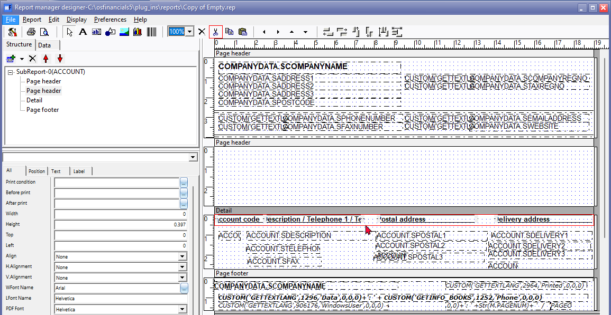
Add Heading Detail to Page header
If you need to add headings to the Page header section, you may add them manually.
Refer to Add headings to the Data on the Details section of the report in this document.
If you have already added detail in another report section (e.g. Detail section), you may cut and paste the detail (e.g. heading labels) to the new Page header.
To move the Heading Expressions to the Page header:
- Select the Detail section of the report structure.
- Select the label e.g. "Account code"; and while keeping the Shift key in; use the mouse to select the rest of the labels.
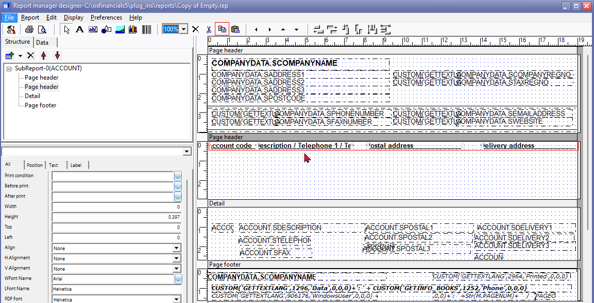
- Select Edit → Cut (Alt+X) or press the (Alt+X) keys.
- Select the new Page header section of the report.
- Select Edit → Paste (Alt+V) or press the (Alt+V) keys.
Add a name for the report
It is recommended to add a name or description to the report.
To add a name for the report:
- Move the pasted fields a bit down to add a name of your report in the Page header section.
- Select the Text icon to insert static text and drag it to the required space on the Page header section of the report.
- On the Label tab, enter "Debtor list" in the "Text" field.
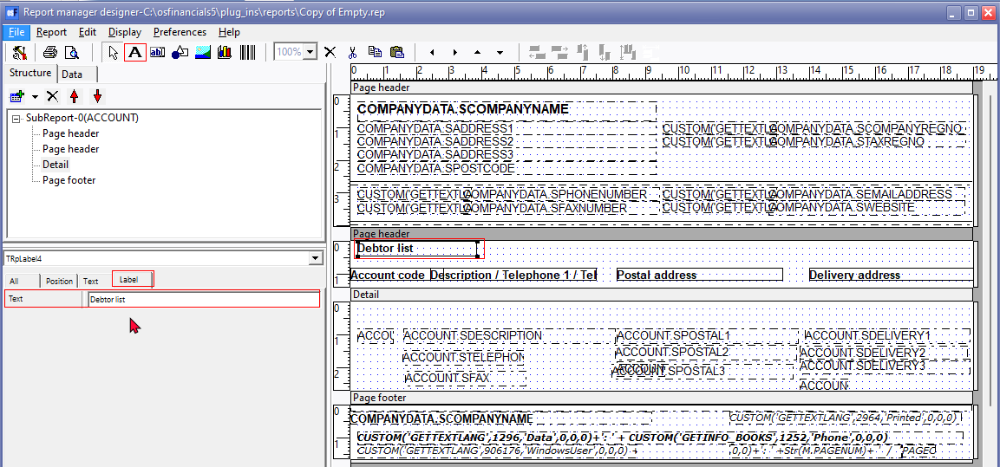
- Resize the Page header.
- You may wish to add (insert) a Simple drawing (horizontal line).
- Tidy the Detail section
- Move the fields as required.
- Resize the Detail section.
- Click on the Print preview button to check the layout.
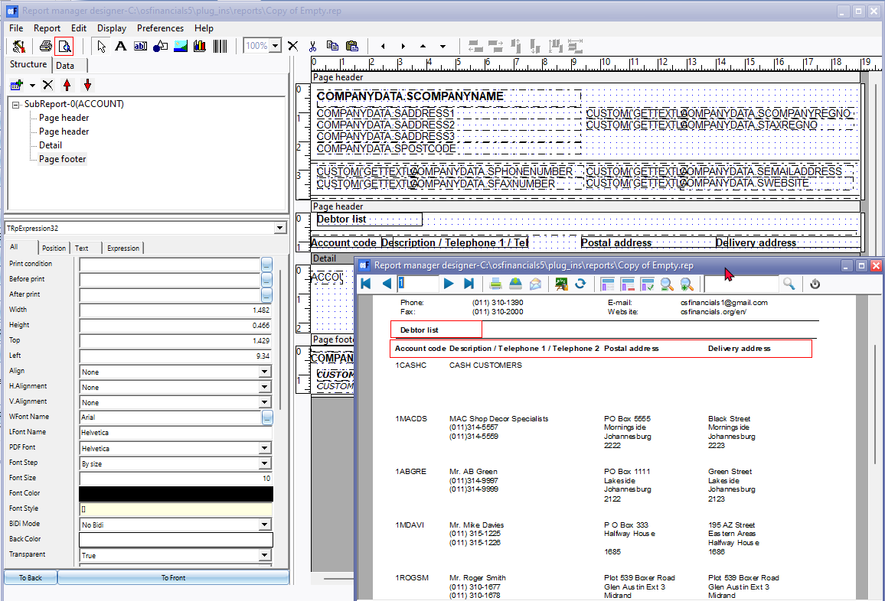
- The layout of the report seems to be fine on a one page report. To test the "Print preview" on more than one page, the Company detail on the First header will be printed on each consecutive page.
|
|
If you do not have enough data to test the multi-page report headers, you may stretch the second Page header or the Detail sections of the report. If it works remember to resize the report sections back. |
Page header - Print company details only on the first page
If the report is printed on more pages than 1 page, the Page headers, will by default be printed on the next pages of the report.
You may set it to print only on the fist page.
To set a print condition for the Page header:
- Select the Page header (with Company details).
- On the Data tab, select the Variables Dataset.
- Check for the M.PAGE setting.
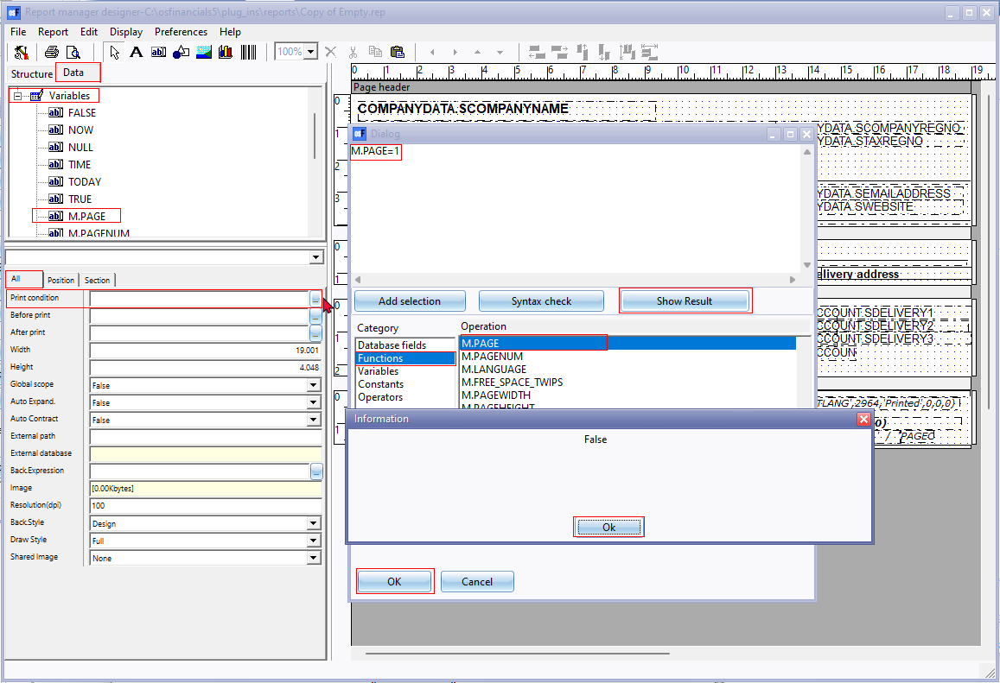
- On the All tab, select the Print condition and click on the … icon.
- On the "Dialog" screen, select the "Category" - "Functions" and select "M.PAGE".
- Click on the Add selection button (or double-click) and type “= 1” after the "M.PAGE" operation. The SQL on the "Dialog" should read as follows:
“M.PAGE=1”
- If you click on the Show details button, the result should be “False”.
- Click Ok on the "Information" screen.
- Click on the Print preview button.
- The first Page header (Company data) will print on Page 1 only. The second page header will print on page 1 as well as any consecutive pages.
|
|
If you do not have enough data to test the multi-page report headers, you may stretch the second Page header or the Detail sections of the report. If it works remember to resize the report sections back. |
|
|
Whenever you close the "Report manager designer" screen, after editing your report, remember save the report. If you click on No, on the "Save report?" confirmation message, your changes will be discarded (lost). |